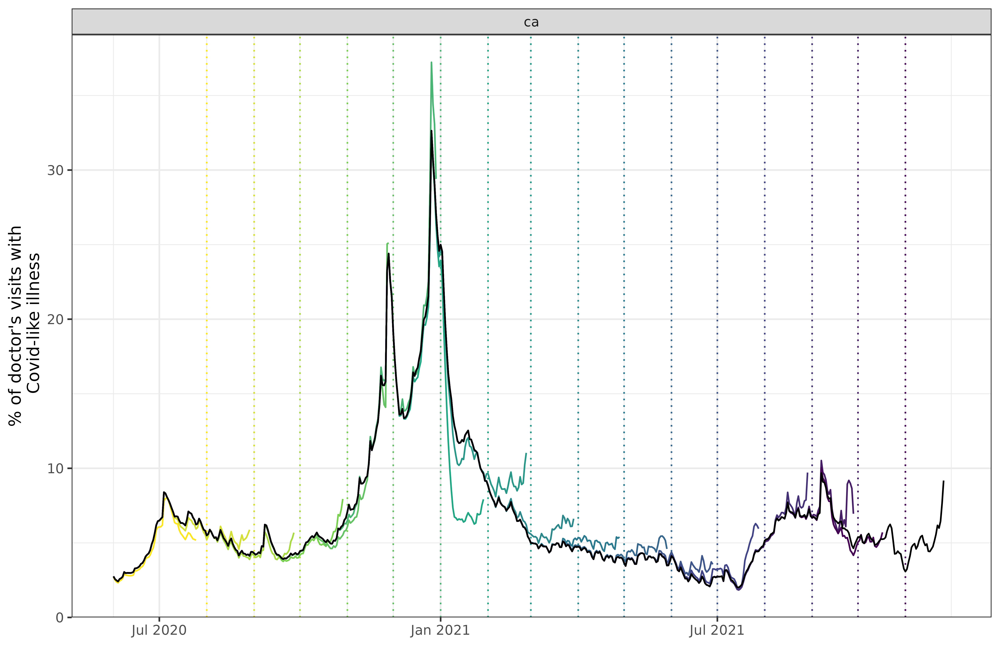
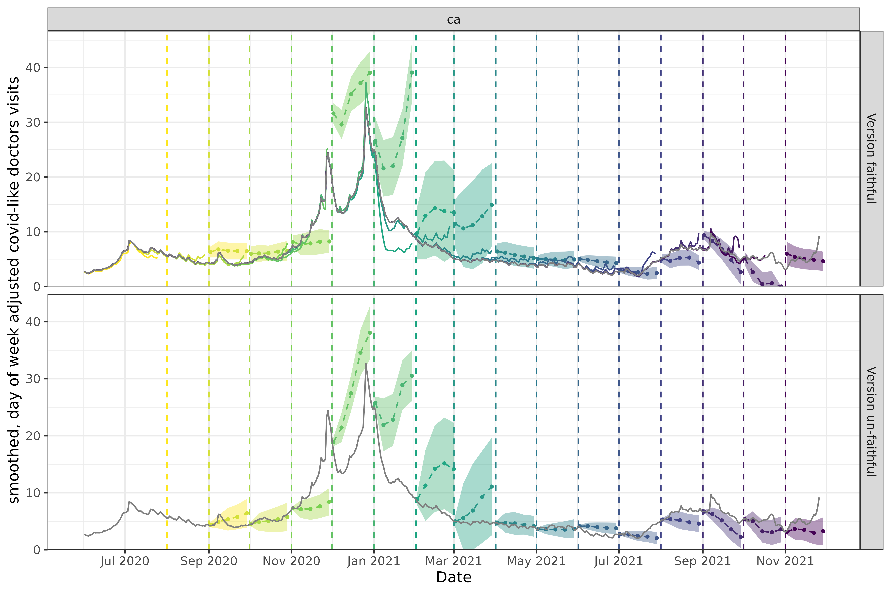

Backtesting is a crucial step in the development of forecasting models. It involves testing the model on historical time periods to see how well it generalizes to new data.
In the context of epidemiological forecasting, to do backtesting accurately, we need to account for the fact that the data available at the time of the forecast would have been different from the data available at the time of the backtest. This is because new data is constantly being collected and added to the dataset, and old data potentially revised. Training and making predictions only on finalized data can lead to overly optimistic estimates of accuracy (see, for example, McDonald et al. 2021 and the references therein).
In the epiprocess package, we provide the function
epix_slide() to help conviently perform version-faithful
forecasting by only using the data as it would have been available at
forecast reference time. In this vignette, we will demonstrate how to
use epix_slide() to backtest an auto-regressive forecaster
constructed using arx_forecaster() on historical COVID-19
case data from the US and Canada.
Getting case data from US states into an
epi_archive
# Setup
library(epipredict)
library(epiprocess)
library(epidatr)
library(data.table)
library(dplyr)
library(tidyr)
library(ggplot2)
library(magrittr)
library(purrr)
library(lubridate)First, we create an epi_archive() to store the version
history of the percentage of doctor’s visits with CLI (COVID-like
illness) computed from medical insurance claims and the number of new
confirmed COVID-19 cases per 100,000 population (daily) for 4 states
# Select the `percent_cli` column from the data archive
doctor_visits <- archive_cases_dv_subset$DT |>
select(geo_value, time_value, version, percent_cli) |>
tidyr::drop_na(percent_cli) |>
as_epi_archive(compactify = TRUE)The data can also be fetched from the Delphi Epidata API with the following query:
library(epidatr)
doctor_visits <- pub_covidcast(
source = "doctor-visits",
signals = "smoothed_adj_cli",
geo_type = "state",
time_type = "day",
geo_values = "ca,fl,ny,tx",
time_values = epirange(20200601, 20211201),
issues = epirange(20200601, 20211201)
) |>
# The version date column is called `issue` in the Epidata API. Rename it.
select(version = issue, geo_value, time_value, percent_cli = value) |>
as_epi_archive(compactify = TRUE)In the interest of computational speed, we limit the dataset to 4 states and 2020–2021, but the full archive can be used in the same way and has performed well in the past.
We choose this dataset in particular partly because it is revision heavy; for example, here is a plot that compares monthly snapshots of the data.
Code for plotting
geo_choose <- "ca"
forecast_dates <- seq(
from = as.Date("2020-08-01"),
to = as.Date("2021-11-01"),
by = "1 month")
percent_cli_data <- bind_rows(
# Snapshotted data for the version-faithful forecasts
map(
forecast_dates,
~ doctor_visits |>
epix_as_of(.x) |>
mutate(version = .x)
) |>
bind_rows() |>
mutate(version_faithful = "Version faithful"),
# Latest data for the version-un-faithful forecasts
doctor_visits |>
epix_as_of(doctor_visits$versions_end) |>
mutate(version_faithful = "Version un-faithful")
) |> as_tibble()
p0 <- autoplot(
archive_cases_dv_subset, percent_cli,
.versions = forecast_dates,
.mark_versions = TRUE,
.facet_filter = (geo_value == "ca")
) +
scale_x_date(minor_breaks = "month", date_labels = "%b %Y") +
labs(x = "", y = "% of doctor's visits with\n Covid-like illness") +
scale_color_viridis_c(
option = "viridis",
guide = guide_legend(reverse=TRUE), direction = -1) +
scale_y_continuous(limits = c(0, NA), expand = expansion(c(0, 0.05))) +
theme(legend.position = "none")
The snapshots are taken on the first of each month, with the vertical
dashed line representing the issue date for the time series of the
corresponding color. For example, the snapshot on March 1st, 2021 is
aquamarine, and increases to slightly over 10. Every series is
necessarily to the left of the snapshot date (since all known values
must happen before the snapshot is taken1). The black line
overlaying the various snapshots represents the “final value”, which is
just the snapshot at the last version in the archive (the
versions_end).
Comparing with the black line tells us how much the value at the time
of the snapshot differs with what was eventually reported. The drop in
January 2021 in the snapshot on 2021-02-01 was initially
reported as much steeper than it eventually turned out to be, while in
the period after that the values were initially reported as higher than
they actually were.
Handling data latency is important in both real-time forecasting and
retrospective forecasting. Looking at the very first snapshot,
2020-08-01 (the purple dotted vertical line), there is a
noticeable gap between the forecast date and the end of the red
time-series to its left. In fact, if we take a snapshot and get the last
time_value,
doctor_visits |>
epix_as_of(as.Date("2020-08-01")) |>
pull(time_value) |>
max()
#> [1] "2020-07-25"the last day of data is the 25th, a entire week before
2020-08-01. This can require some effort to work around,
especially if the latency is variable; see
step_adjust_latency() for some methods included in this
package. Much of that functionality is built into
arx_forecaster() using the parameter
adjust_ahead, which we will use below.
Backtesting a simple autoregressive forecaster
In addition to outlier detection and nowcasting, a common use case of
epiprocess::epi_archive() object is for accurate model
back-testing.
To start, let’s use a simple autoregressive forecaster to predict
percent_cli, the percentage of doctor’s hospital visits
associated with COVID-like illness, 14 days in the future. For increased
accuracy we will use quantile regression.
Comparing a single day and ahead
As a sanity check before we backtest the entire dataset,
let’s forecast a single day in the middle of the dataset. We can do this
by setting the .versions argument in
epix_slide():
forecast_date <- as.Date("2021-04-06")
forecasts <- doctor_visits |>
epix_slide(
~ arx_forecaster(
.x,
outcome = "percent_cli",
predictors = "percent_cli",
args_list = arx_args_list()
)$predictions |>
pivot_quantiles_wider(.pred_distn),
.versions = forecast_date
)We need truth data to compare our forecast against. We can construct
it by using epix_as_of() to snapshot the archive at the
last available date2.
Note: We always want to compare our forecasts to actual
(most recently reported) values because that is the outcome we care
about. as_of data is useful for understanding why we’re
getting the forecasts we’re getting, but as_of values are
only preliminary outcomes. Therefore, it’s not meaningful to use them
for evaluating the performance of a forecast. Unfortunately, it’s not
uncommon for revisions to cause poor (final) performance of a forecaster
that was decent at the time of the forecast.
forecasts |>
inner_join(
doctor_visits |>
epix_as_of(doctor_visits$versions_end),
by = c("geo_value", "target_date" = "time_value")
) |>
select(geo_value, forecast_date, .pred, `0.05`, `0.95`, percent_cli)
#> # A tibble: 4 × 6
#> geo_value forecast_date .pred `0.05` `0.95` percent_cli
#> <chr> <date> <dbl> <dbl> <dbl> <dbl>
#> 1 ca 2021-04-03 6.79 2.63 11.0 4.06
#> 2 fl 2021-04-03 7.40 3.23 11.6 5.10
#> 3 ny 2021-04-03 8.05 3.88 12.2 6.92
#> 4 tx 2021-04-03 5.00 0.836 9.17 3.25.pred corresponds to the point forecast (median), and
0.05 and 0.95 correspond to the 5th and 95th
quantiles. The percent_cli truth data falls within the
prediction intervals, so our implementation passes a simple
validation.
Comparing version faithful and version un-faithful forecasts
Now let’s compare the behavior of this forecaster, both properly considering data versioning (“version faithful”) and ignoring data versions (“version un-faithful”).
For the version un-faithful approach, we need to do some setup if we
want to use epix_slide for backtesting. We want to simulate
a data set that receives finalized updates every day, that is, a data
set with no revisions. To do this, we will snapshot the latest version
of the data to create a synthetic data set, and convert it into an
archive where version = time_value3.
archive_cases_dv_subset_faux <- doctor_visits |>
epix_as_of(doctor_visits$versions_end) |>
mutate(version = time_value) |>
as_epi_archive()For the version faithful approach, we will continue using the
original epi_archive object containing all version
updates.
We will also create the helper function
forecast_wrapper() to let us easily map across aheads.
forecast_wrapper <- function(
epi_data, aheads, outcome, predictors, process_data = identity
) {
map(
aheads,
\(ahead) {
arx_forecaster(
process_data(epi_data), outcome, predictors,
args_list = arx_args_list(
ahead = ahead,
lags = c(0:7, 14, 21),
adjust_latency = "extend_ahead"
)
)$predictions |> pivot_quantiles_wider(.pred_distn)
}
) |> bind_rows()
}Note: In the helper function, we’re using the parameter
adjust_latency. We need to use it because the most recently
released data may still be several days old on any given forecast date
(lag > 0); adjust_latency will modify the forecaster to
compensate4. See the function
step_adjust_latency() for more details and examples.
Now that we’re set up, we can generate forecasts for both the version faithful and un-faithful archives, and bind the results together.
forecast_dates <- seq(
from = as.Date("2020-09-01"),
to = as.Date("2021-11-01"),
by = "1 month"
)
aheads <- c(1, 7, 14, 21, 28)
version_unfaithful <- archive_cases_dv_subset_faux |>
epix_slide(
~ forecast_wrapper(.x, aheads, "percent_cli", "percent_cli"),
.before = 120,
.versions = forecast_dates
) |>
mutate(version_faithful = "Version un-faithful")
version_faithful <- doctor_visits |>
epix_slide(
~ forecast_wrapper(.x, aheads, "percent_cli", "percent_cli"),
.before = 120,
.versions = forecast_dates
) |>
mutate(version_faithful = "Version faithful")
forecasts <-
bind_rows(
version_unfaithful,
version_faithful
)arx_forecaster() does all the heavy lifting. It creates
and lags copies of the features (here, the response and doctors visits),
creates and leads copies of the target while respecting timestamps and
locations, fits a forecasting model using the specified engine, creates
predictions, and creates non-parametric confidence bands.
To see how the version faithful and un-faithful predictions compare, let’s plot them on top of the latest case rates, using the same versioned plotting method as above. Note that even though we fit the model on four states (California, Texas, Florida, and New York), we’ll just display the results for two states, California (CA) and Florida (FL), to get a sense of the model performance while keeping the graphic simpler.
Code for plotting
geo_choose <- "ca"
forecasts_filtered <- forecasts |>
filter(geo_value == geo_choose) |>
mutate(time_value = version)
# we need to add the ground truth data to the version faithful plot as well
plotting_data <- bind_rows(
percent_cli_data,
percent_cli_data |>
filter(version_faithful == "Version un-faithful") |>
mutate(version = max(percent_cli_data$version)) |>
mutate(version_faithful = "Version faithful")
)
p1 <- ggplot(data = forecasts_filtered,
aes(x = target_date, group = time_value)) +
geom_ribbon(
aes(ymin = `0.05`, ymax = `0.95`, fill = (time_value)),
alpha = 0.4) +
geom_line(aes(y = .pred, color = (time_value)), linetype = 2L) +
geom_point(aes(y = .pred, color = (time_value)), size = 0.75) +
# the forecast date
geom_vline(
data = percent_cli_data |>
filter(geo_value == geo_choose) |>
select(-version_faithful),
aes(color = version, xintercept = version, group = version),
lty = 2
) +
# the underlying data
geom_line(
data = plotting_data |> filter(geo_value == geo_choose),
aes(x = time_value, y = percent_cli, color = (version), group = version),
inherit.aes = FALSE, na.rm = TRUE
) +
facet_grid(version_faithful ~ geo_value, scales = "free") +
scale_x_date(breaks = "2 months", date_labels = "%b %Y") +
scale_y_continuous(expand = expansion(c(0, 0.05))) +
labs(x = "Date",
y = "smoothed, day of week adjusted covid-like doctors visits") +
scale_color_viridis_c(option = "viridis", direction = -1) +
scale_fill_viridis_c(option = "viridis", direction = -1) +
theme(legend.position = "none")
geo_choose <- "fl"
forecasts_filtered <- forecasts |>
filter(geo_value == geo_choose) |>
mutate(time_value = version)
forecasts_filtered %>% names
#> [1] "version" "geo_value" ".pred"
#> [4] "forecast_date" "target_date" "0.05"
#> [7] "0.1" "0.25" "0.5"
#> [10] "0.75" "0.9" "0.95"
#> [13] "version_faithful" "time_value"
p2 <-
ggplot(data = forecasts_filtered, aes(x = target_date, group = time_value)) +
geom_ribbon(aes(ymin = `0.05`, ymax = `0.95`, fill = (time_value)), alpha = 0.4) +
geom_line(aes(y = .pred, color = (time_value)), linetype = 2L) +
geom_point(aes(y = .pred, color = (time_value)), size = 0.75) +
# the forecast date
geom_vline(
data = percent_cli_data |> filter(geo_value == geo_choose) |> select(-version_faithful),
aes(color = version, xintercept = version, group = version),
lty = 2
) +
# the underlying data
geom_line(
data = plotting_data |> filter(geo_value == geo_choose),
aes(x = time_value, y = percent_cli, color = (version), group = version),
inherit.aes = FALSE, na.rm = TRUE
) +
facet_grid(version_faithful ~ geo_value, scales = "free") +
scale_x_date(breaks = "2 months", date_labels = "%b %Y") +
scale_y_continuous(expand = expansion(c(0, 0.05))) +
labs(x = "Date", y = "smoothed, day of week adjusted covid-like doctors visits") +
scale_color_viridis_c(option = "viridis", direction = -1) +
scale_fill_viridis_c(option = "viridis", direction = -1) +
theme(legend.position = "none")
p2
There are some weeks when the forecasts are somewhat similar, and others when they are wildly different, although neither approach produces amazingly accurate forecasts.
In the version faithful case for California, the March 2021 forecast (turquoise) starts at a value just above 10, which is very well lined up with reported values leading up to that forecast. The measured and forecasted trends are also concordant (both increasingly moderately fast).
Because the data for this time period was later adjusted down with a decreasing trend, the March 2021 forecast looks quite bad compared to finalized data. The equivalent version un-faithful forecast starts at a value of 5, which is in line with the finalized data but would have been out of place compared to the version data.
The October 2021 forecast for the version faithful case floors out at zero, whereas the un-faithful is much closer to the finalized data.
Now let’s look at Florida. In the version faithful case, the three late-2021 forecasts (purples and pinks) starting in September predict very low values, near 0. The trend leading up to each forecast shows a substantial decrease, so these forecasts seem appropriate and we would expect them to score fairly well on various performance metrics when compared to the versioned data.
However in hindsight, we know that early versions of the data systematically under-reported COVID-related doctor visits such that these forecasts don’t actually perform well compared to finalized data. In this example, version faithful forecasts predicted values at or near 0 while finalized data shows values in the 5-10 range. As a result, the version un-faithful forecasts for these same dates are quite a bit higher, and would perform well when scored using the finalized data and poorly with versioned data.
In general, the longer ago a forecast was made, the worse its performance is compared to finalized data. Finalized data accumulates revisions over time that make it deviate more and more from the non-finalized data a model was trained on. Forecasts trained on finalized data will of course appear to perform better when scored on finalized data, but will have unknown performance on the non-finalized data we need to use if we want timely predictions.
Without using data that would have been available on the actual forecast date, you have little insight into what level of performance you can expect in practice.
Good performance of a version un-faithful model is a mirage; it is only achievable if the training data has no revisions. If a data source has any revisions, version un-faithful-level performance is unachievable when making forecasts in real time.